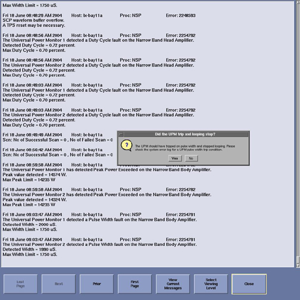
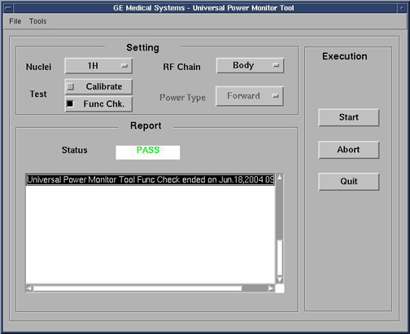

Illustration 5: Body Peak UPM Trip Question

The result of each test is compared against a Specification File on the system, and the UPM status should indicate Pass/Fail.
During the tests, the user will be prompted three times as each test completes. Look in the error log to confirm that the tests completed successfully. The following illustrations are examples of pop-ups and error logs that should display.
Illustration 5: Body Peak UPM Trip Question
Illustration 6: Error Log Example Showing Body Peak Trip

Illustration 7: Body Pulse Width Trip Question

Illustration 8: Error Log Example Showing Body Pulse Width Trip

Illustration 9: Body Pulse Duty Cycle Trip Question

Illustration 10: Error Log Example Showing Body Pulse Duty Cycle Trip

Illustration 11: Pass Message

| NOTE: | A TPS Reset must be performed when testing is complete before scanning can resume. |